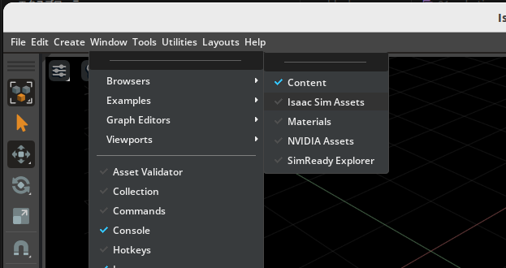
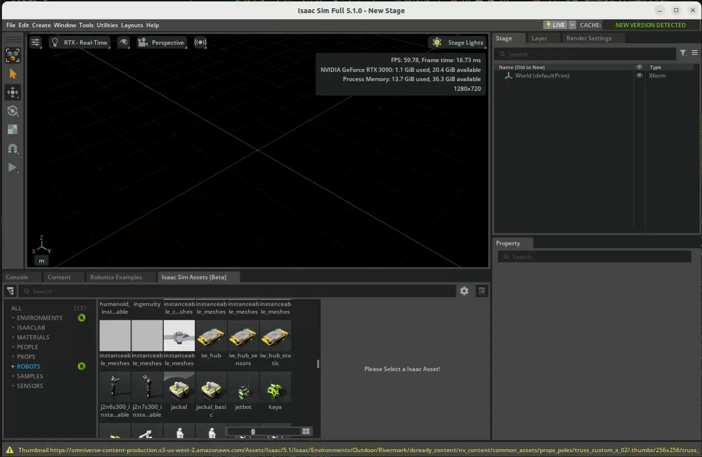

Hello Robot¶
Learning Objectives¶
After completing this tutorial, you will have learned:
- How to load robot assets from the Nucleus server into the scene
- How to wrap a robot prim with the
Articulationclass and access it via high-level APIs - How to move a robot by sending velocity commands to its joints with
set_dof_velocity_targets() - How to apply actions continuously during simulation using
SimulationManagerphysics callbacks - How to control specific joints by name or index
Getting Started¶
Prerequisites¶
- Completed Tutorial 1: Hello World
- An Omniverse Nucleus server with the
/Isaacfolder is configured
What is the Nucleus server?
Nucleus is Omniverse's asset distribution and sharing server. Official assets used by Isaac Sim, such as robots and environments (under the /Isaac folder), are loaded via Nucleus. If you set up Isaac Sim with the standard installation procedure, no additional configuration is needed—just specify the asset path (e.g., .../Isaac/Robots/...).
Estimated Time¶
Approximately 10–15 minutes
Preparing the Source Code¶
In this tutorial, you continue editing hello_world.py from the Hello World example. If you are continuing from the previous tutorial, proceed as is. If you are resuming on another day, open the source code with the following steps.
- Activate Windows > Examples > Robotics Examples to open the Robotics Examples tab.
- Click Robotics Examples > General > Hello World.
- Click the Open Source Code button to open
hello_world.pyin Visual Studio Code.
For detailed steps, see the "Opening the Hello World Example" section of Hello World.
Adding a Robot to the Scene¶
In the previous tutorial we added a cube to the scene; this time we add a robot. Here we use NVIDIA's Jetbot (a two-wheeled differential drive robot).
How to add a robot via the GUI (click to expand)
You can also add robots to the scene by drag-and-drop from the Isaac Sim Assets browser, without writing any Python code.
-
Click Window > Browsers > Isaac Sim Assets to enable the Isaac Sim Assets window.

Note on first launch
When you open the Isaac Sim Assets window for the first time, asset data is downloaded, so it may take a while to display. Depending on your network environment, it can take several minutes or more.
-
Type "Jetbot" in the search bar and drag-and-drop the displayed Jetbot asset into the viewport.

This method is convenient for quickly placing robots, but learning the Python API approach allows you to add and control robots dynamically from your programs. The following explains the Python API approach.
Adding a Robot with the Python API¶
Robot assets are stored on the Omniverse Nucleus server. Use get_assets_root_path() to get the asset root path, and stage_utils.add_reference_to_stage() to load the asset into the USD Stage.
However, add_reference_to_stage() alone only places the robot's 3D model and physics properties on the Stage; it does not enable robot-level control such as reading joint positions or sending velocity commands. To control the robot you would otherwise have to work directly with low-level USD or PhysX APIs.
Therefore, wrap the loaded robot prim with the Articulation class. The Articulation class only references the existing prim—it does not copy or convert it. It creates a Python object that provides high-level APIs such as get_dof_positions() and set_dof_velocity_targets() for the same /World/Fancy_Robot prim.
| Operation | Role |
|---|---|
stage_utils.add_reference_to_stage() |
Creates the robot's prim on the USD Stage |
Articulation(path) |
References the existing prim and creates a Python wrapper providing high-level joint control APIs |
First, import the required packages:
Add the Jetbot to the stage in setup_scene:
Wrap it with the Articulation class in setup_post_load:
The complete code is as follows:
About References
add_reference_to_stage() adds the USD file to the Stage as a Reference. Because it keeps a link to the original file, if the referenced asset is updated, the change is reflected when the stage is reopened (reloaded). While it is also possible to copy USD contents directly into the Stage, the reference approach is standard for loading robot assets.
Save the code and check the simulation:
- Press Ctrl+S to save the code and hot-reload Isaac Sim.
- Open the Hello World example extension window again.
- Create a new world via File > New From Stage Template > Empty, then press the LOAD button.
- Verify that the Jetbot appears in the scene and that the number of DOFs and joint names are printed in the terminal.
The scene has loaded, but the robot is not moving yet. The next section walks through how to make the robot move.
Key Point about Physics Handles¶
Note that creating the Articulation class and querying its properties are done in setup_post_load, not setup_scene.
Caution
Articulation properties (degrees of freedom, joint positions, etc.) cannot be accessed until the physics handles have been initialized. setup_post_load is called after one physics time step has completed, so this information can be accessed safely there. Always perform articulation-related processing in or after setup_post_load.
Moving the Robot¶
Next, apply random velocity commands to the Jetbot's wheel joints to get it moving.
Use the Articulation class's set_dof_velocity_targets() to send velocity commands to joints. This sets target velocities for the implicit PD controller built into the physics engine.
What is an implicit PD controller? (click to expand)
In a real robot, when you specify a "target position" or "target velocity" for a motor, the controller inside the motor driver computes the current (torque) according to the difference between the target and current values, and drives the joint.
Isaac Sim's physics engine (PhysX) has a similar mechanism built in. When you specify target positions or target velocities, PhysX internally performs PD control (proportional-derivative control) and automatically computes the forces needed to track the targets.
Because this PD controller is built implicitly into the physics engine rather than implemented explicitly by the user, it is called an "implicit PD controller".
To send velocity commands at every physics step, use the SimulationManager physics callback you learned in Tutorial 1.
Import SimulationManager:
Register the callback:
Define the command function:
The complete code is as follows:
Array shape for velocity commands
Since the experimental API assumes batched processing, the shape of the array passed to set_dof_velocity_targets() is (number of objects, number of DOFs). For a single Jetbot, pass a (1, 2) array (left and right wheels).
Save the code and check the simulation:
- Press Ctrl+S to save the code and hot-reload Isaac Sim.
- Create a new world via File > New From Stage Template > Empty, then press the LOAD button.
- Watch the Jetbot move around with random velocities.

Because random velocities (in the 0–5 range) are applied to the left and right wheels at every step, the Jetbot moves erratically.
Exercises¶
Try the following exercises to deepen your understanding of robot control.
Exercise 1: Move backwards — Make the Jetbot move backwards.
Hint (click to expand)
Use negative wheel velocities.
Exercise 2: Turn right — Make the Jetbot turn to the right.
Hint (click to expand)
Apply different velocities to each wheel (faster on the left wheel, slower on the right).
Exercise 3: Stop after 5 seconds — Make the Jetbot stop 5 seconds after the simulation starts.
Hint (click to expand)
Accumulate the callback argument dt at every step to compute elapsed time, and stop with a conditional branch.
Controlling Specific Joints¶
You can also control specific joints individually by their names or indices. Let's see how to get the wheel joint indices and apply velocities only to specific joints.
Get the wheel joint indices:
Set wheel velocities using the indices:
The complete code is as follows:
For a robot like the Jetbot where all joints are controlled, specifying indices is not strictly necessary, but this approach is useful when you want to control only a subset of joints on a robot with many joints (such as a manipulator).
Summary¶
This tutorial covered the following topics:
- Adding a robot to the stage with
stage_utils.add_reference_to_stage() - Wrapping a robot prim with the Articulation class and accessing it via high-level APIs
- Velocity control with
set_dof_velocity_targets() - Registering physics callbacks with SimulationManager
- Controlling specific joints by name or index
Next Steps¶
Continue to the next tutorial, Adding a Controller, to learn how to add a controller to the robot for more advanced behavior.
Next step in the official tutorial series
"Adding a Controller" was removed from the official Isaac Sim 6.0 documentation; this site retains it as its own guide based on the 5.1.0 content. In the official tutorial series, the next tutorial is Adding a Manipulator Robot.
Further Learning
Isaac Sim also provides extensions for wheeled robots and manipulators (such as isaacsim.robot.experimental.wheeled_robots and isaacsim.robot.experimental.manipulators.examples). See the standalone examples located at standalone_examples/api/isaacsim.robot.experimental.manipulators/franka and standalone_examples/api/isaacsim.robot.experimental.manipulators/universal_robots/.